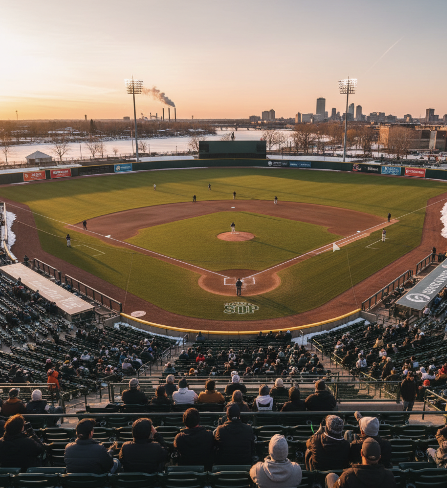
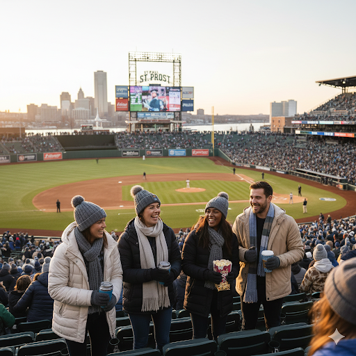
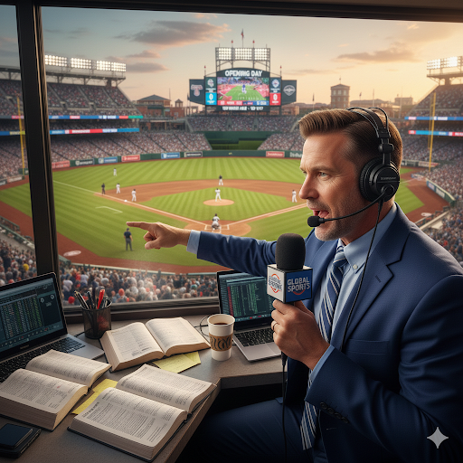
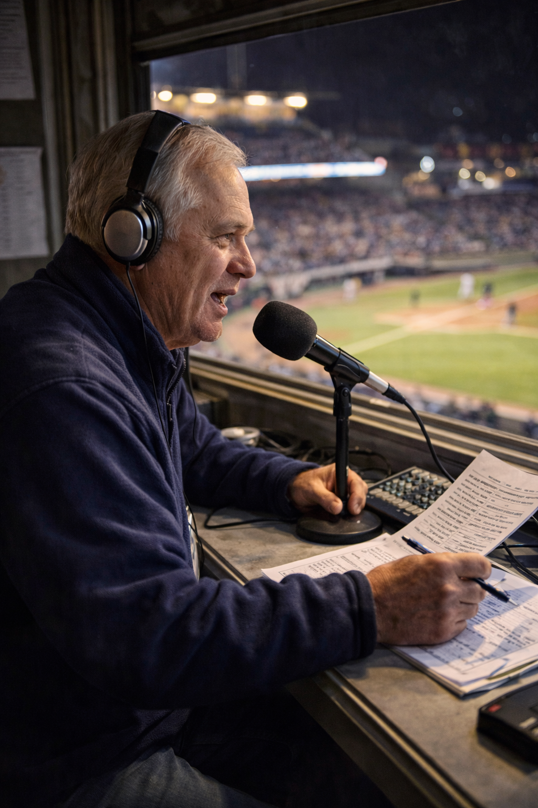
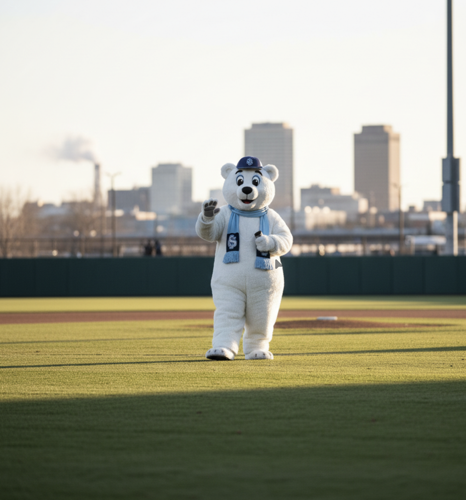

Rimefield Park
A river-adjacent stadium with wide concourses, clean sightlines and bright lights after sunset.
Claim & craft Rimefield Park →
Listen along the Ice Rail when the count goes full. You can hear the seats tip up, one row after another.
The season is complete. Explore and contribute during the offseason.
League standings →Select a card to flip it over. Open a player’s record to explore their story or make a claim.

A river-adjacent stadium with wide concourses, clean sightlines and bright lights after sunset.
Claim & craft Rimefield Park →
Clear, measured calls with enough warmth to make it feel like you’re already there. Halvorsen lets the crowd noise breathe.

A steady baritone that carries through the upper deck. Lineups, counts and between-inning announcements, kept clear and audible.

Rime works the aisles: high-fives at the rail, photos on the concourse and quick waves to kids who spot him first.
Claim & craft Rime →Gloves on, hats low, and quiet focus between big moments. When the count runs full, people stand.
Claim & craft The Ice Rail →At three balls and two strikes, the front row of the Ice Rail stands. The next row follows. June Halvorsen leaves a little room on the broadcast for the sound of seats tipping up before the pitch.
Claim & craft The Full Count →